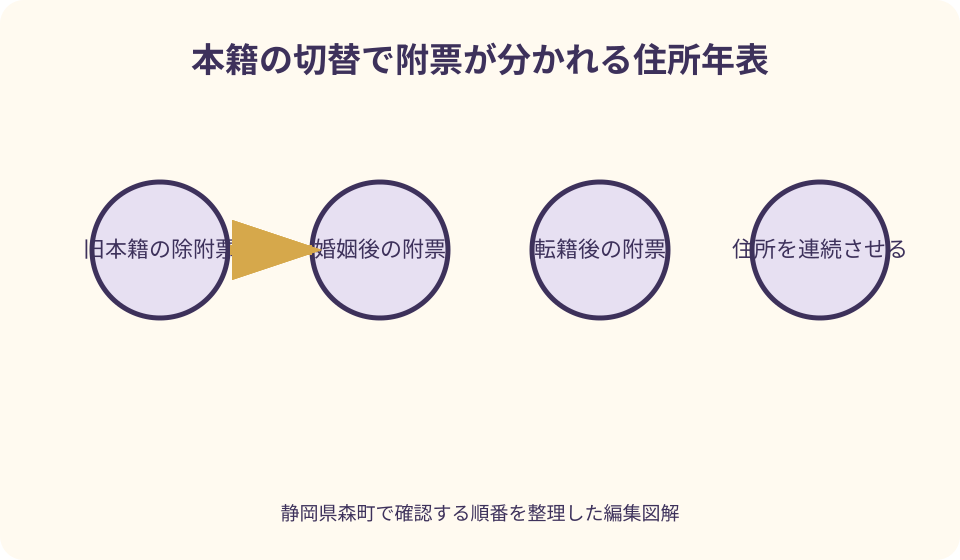
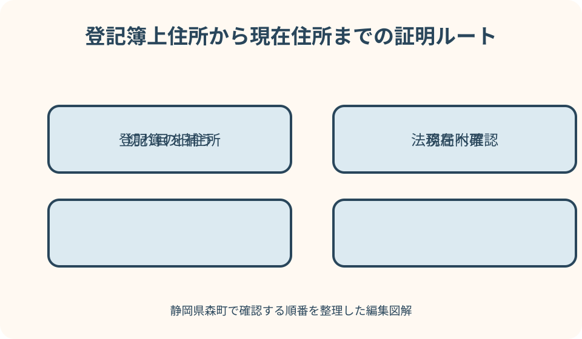

行政手続・証明書｜最終確認 2026-08-10
静岡県森町の戸籍の附票｜住所履歴が途切れる理由と請求方法
戸籍の附票は、本籍地の市区町村が戸籍と一緒に管理する住所記録です。現在の住民票より長い住所履歴を確認できることがありますが、生まれてから現在までが必ず一通に載るわけではありません。婚姻、離婚、転籍、戸籍の改製などで戸籍が変わると附票も区切られます。森町公式と法務省・法務局の一次情報を基に、必要な旧住所を起点に請求範囲を組み立てます。

編集イラスト戸籍の附票は本籍地が管理する住所の記録
戸籍の附票は、戸籍に記載されている人の住所の移り変わりを、本籍地の市区町村が戸籍と関連付けて記録したものです。親族関係や婚姻の事実を示す戸籍謄本そのものではありません。住所を証明したいのか、親族関係を証明したいのかを最初に分けます。
現在住所の確認だけなら、住所地で発行される住民票の写しで足りる場合があります。一方、不動産の登記簿に古い住所が残っている、車検証の住所から数回転居した、といった場面では、旧住所と現住所のつながりを示すため附票が候補になります。
附票の請求先は、証明したい人の本籍地です。現在森町に住んでいるから森町で全期間の附票が取れるとは限りません。森町に本籍がある期間の附票は森町へ、以前の本籍地に属する期間はその市区町村へ確認します。
森町公式の戸籍請求ページは、戸籍附票の写しを証明書の一つとして案内しています。請求前には、本籍、筆頭者、対象者、必要な住所、使い道を一枚にし、住民生活課住民係へどの附票が該当するか確認します。
一通で生涯の住所が出るとは限らない
附票に載る住所は、その戸籍が作られ、その人が戸籍に在籍していた期間に対応します。出生から現在までの住所を一通にまとめる個人台帳ではありません。現在戸籍が作られる前の住所は、前の戸籍に対応する附票へ分かれている可能性があります。
婚姻で親の戸籍から出て新しい戸籍へ入ると、婚姻前と婚姻後で附票が分かれます。離婚後に新戸籍を作った場合や、養子縁組で戸籍が動いた場合も、必要な旧住所がどの戸籍期間に属するかを確認します。
転籍は戸籍の本籍を移す手続です。森町へ転籍した人が、転籍前に県外で暮らした住所まで森町の現在附票に全て載ると考えず、転籍前の本籍地の除附票が必要かを窓口へ尋ねます。
戸籍がコンピュータ化などで改製されたときも、改製前後で附票が区切られることがあります。古い住所が現在の附票に見当たらないから住所異動の記録が消えたと断定せず、改製前の附票を発行できるかを本籍地へ確認します。
必要な旧住所を起点に範囲を決める
請求の前に、提出先が照合したい最も古い住所を正確に書き写します。不動産登記簿、車検証、金融機関の登録情報など、変更前の記録に載る住所を省略せず確認します。番地や住居表示の表記が違うと、つながりを判断しにくくなります。
次に現在の住民票上の住所を書き、旧住所との間に住んだ住所を覚えている範囲で並べます。全てを暗記していなくても、転居したおおよその年、当時の本籍、婚姻・転籍の時期が分かると、どの附票を探すかの手掛かりになります。
窓口では「附票を一通」ではなく、「登記簿上の静岡県○○市の住所から、現在の森町の住所までつながるもの」のように目的を伝えます。古い住所を具体的に示せば、現在附票だけで足りるか、除附票も必要かを確認しやすくなります。
提出先が必要とする範囲を超えて、家族全員の住所履歴を取得しないことも大切です。本人分で足りるか、戸籍全員分が必要か、発行からの期間指定があるかを先に聞き、必要最小限の証明を請求します。

住民票・除票・戸籍の附票を使い分ける
現在住所と現在の世帯情報を示すなら住民票が基本です。森町公式の住民票請求ページでは、世帯全員分か個人分か、世帯主・続柄・本籍など必要事項を選ぶ考え方が示されています。住所履歴という目的だけで、最初から附票に限定しません。
直前の住所地から転出した人については、住民票の除票で前住所と転出先を確認できる場合があります。転居回数が少なく、登記簿上住所が直前住所なら、附票より住民票の除票が適することもあるため提出先へ確認します。
何度も転居し、住所地の自治体が複数に分かれる場合は、本籍を変えていなければ戸籍の附票で一続きに確認できる可能性があります。住所地ごとに除票を請求する前に、本籍期間と必要住所を照らし合わせます。
法務局は、登記記録上の住所から現在住所までを住基ネットで確認できない場合、住民票の写しや戸籍の附票の写しなど、移転の経緯を証明する書類が必要になる場合があると案内しています。どちらを使うかは登記の事情に応じて確認します。
本籍・筆頭者と表示項目を請求前に確認する
附票を請求するときは、住所地ではなく本籍の表示と戸籍の筆頭者を記入します。本籍が「森町森」までしか分からない場合、番地を推測せず、手元の戸籍や本籍記載のある住民票で確認する方法を住民係へ相談します。
筆頭者は、その戸籍の先頭に記載される人で、世帯主や現在の住宅所有者とは別です。筆頭者が亡くなっても名称として残る場合があります。家族内で現在の代表者を筆頭者だと思い込まず、正式な氏名を確認します。
附票へ本籍・筆頭者、住民票コードなどを表示するかは、提出用途に応じて確認が必要です。提出先から「本籍の記載不要」「本籍・筆頭者が必要」など指定がある場合は、その文言を窓口へ伝えます。不要な情報を念のため載せないようにします。
旧姓と現在姓のつながりも同時に求められる場合、附票の住所履歴だけで十分かを提出先へ聞きます。氏の変更を証明する戸籍証明と、住所の変更を証明する附票を組み合わせる必要があることもあります。
森町窓口で請求する人と本人確認を整理する
森町の通常の戸籍証明請求では、戸籍に記載されている本人、配偶者、直系親族などの請求が案内されています。本人以外が附票を取る場合は、対象者との関係が森町の戸籍で確認できるか、追加の戸籍資料が必要かを事前に尋ねます。
兄弟姉妹、相続関係者、第三者が請求する場合は、同じ戸籍に載っているか、自己の権利行使や義務履行に必要かなどで扱いが変わります。「親族だから取れる」と一括せず、使い道と関係を具体的に説明します。
代理人による請求では委任状など代理権限を示す書面が必要になる場合があります。森町公式の様式ページで最新の委任状を確認し、戸籍の附票、対象者、必要範囲を明記できるか住民係へ確認します。白紙委任状は避けます。
窓口に来る人の本人確認書類も必要です。森町公式が示す写真付き一種類または写真なし二種類などの区分を実行日に確認し、氏名・現住所・有効期限が現在の状態と一致しているかを見ます。
附票は戸籍証明書の広域交付では取れない
本籍が森町外にある人が森町役場で附票を取りたい場合、戸籍証明書の広域交付は使えません。広域交付の対象は戸籍全部事項証明、除籍全部事項証明、改製原戸籍謄本であり、戸籍の附票は対象外です。
本籍地が遠いから最寄りの役場で附票も取れるだろう、と窓口へ行く前に、本籍地への郵送請求を検討します。自治体ごとに請求書、手数料、本人確認、返信先の条件があるため、本籍地公式ページを確認してください。
森町本籍の附票なら、森町の窓口または郵送請求が候補です。コンビニ交付で取得できる証明の範囲は自治体や利用条件で異なるため、マイナンバーカードがあれば必ず附票を出せるとは考えず、森町公式の対象証明を確認します。
複数の本籍地にまたがる住所履歴は、各本籍地へ附票または除附票を請求し、自分で時系列をつなぐことになります。広域交付で戸籍謄本だけを集めても、必要な住所履歴の証明にはならない点に注意します。
森町への郵送請求は五つの封入物をそろえる
森町公式の郵送請求案内では、請求書、本人確認書類の写し、手数料、返信用封筒、必要に応じ関係資料や委任状を準備する流れが示されています。附票を請求するときも、必要な旧住所と現在住所を請求書へ具体的に書きます。
請求書には申請者の氏名・住所・生年月日、平日日中の連絡先、本籍、筆頭者、対象者、必要な証明と通数を記載します。「住所履歴全部」だけでなく、どの住所からどの住所までが必要かを余白や使い道欄へ補足します。
本人確認書類の写しは、返送先となる住民登録地を確認できるものを用意します。マイナンバーカードをコピーする場合は、個人番号が記載された裏面を不用意に同封せず、森町の最新案内へ従います。パスポート単独では住所確認ができない点にも注意します。
手数料の額や納付方法、郵便料金は変更され得ます。森町公式は定額小為替、返信用封筒、必要に応じた速達・追跡方法を案内しています。古い金額の小為替を買う前に当日のページを開き、平日日中につながる電話番号を書きます。
不動産登記では登記簿上住所から一本につなぐ
土地や建物の所有者住所を変更するときは、固定資産税通知書の送付先ではなく、不動産登記簿に記録された住所を起点にします。登記事項証明書を確認し、そこに載る旧住所と現在住所を結ぶ書類が何かを法務局へ確認します。
法務省・法務局は、住民票コードによる確認ができない場合、戸籍の附票など住所移転の経緯を示す書類が必要になると案内しています。附票を必ず添付すると決める前に、今回の申請で住民票コードや別資料が使えるかを確認します。
登記簿上住所が附票の最初の住所より古い場合、現在附票一通ではつながりません。転籍前の除附票、旧住所地の住民票除票などを追加し、旧住所から現住所まで途中が飛ばない束を作ります。
町名・地番変更で実際には転居していない場合は、住所変更証明など別の公的証明が使えることがあります。名古屋法務局の案内も、住所変更証明が取得できない場合に住民票除票や附票除票などを検討する流れを示しています。原因を転居と決めつけません。
古い住所が出ない場合は代替資料を提出先へ確認する
必要な古い住所が附票に載らないとき、自治体の発行ミスだと決めつけないでください。戸籍の改製、転籍、除籍、保存期間の関係で、現在請求できる記録だけではつながらないことがあります。発行可能な附票の最古住所を窓口で確認します。
次に、転籍前の本籍地、旧住所地、改製前戸籍の有無をたどります。婚姻前の住所なら親の戸籍に対応する除附票、転籍前なら前本籍地の除附票が候補です。どの自治体に何という証明を頼むかを時系列表へ書きます。
それでも公的記録だけでつながらない場合、法務局の案内は、取得可能な住民票除票・附票除票に加え、登記済証、登記識別情報、固定資産税通知書、不在住証明書などを求める場合があると示しています。必要資料は管轄法務局へ確認します。
車、金融機関、保険、資格登録など法務局以外の提出先は、代替資料の扱いが異なります。附票が取れない旨の証明を先に購入するのではなく、発行不可の説明と手元資料を伝え、何を組み合わせればよいかを提出先へ尋ねます。

良い点
戸籍の附票の良い点は、本籍を変えていない期間なら、複数の住所地をまたぐ転居履歴を一つの本籍地で確認できる可能性があることです。住所地ごとに住民票除票を集めるより、旧住所から現住所への線を短い書類束で示せます。
不動産登記のように、古い登録住所と現在住所が同一人物であることを示す場面で役立ちます。氏名が同じだけでは本人を特定しにくい場合も、住所の連続性を公的証明で示す材料になります。
郵送請求が用意されていることも、森町外に住む本籍人には実用的です。本籍確認、本人確認、手数料、返信先を揃えれば、森町役場まで往復せず請求できます。山間部からの移動が難しい家族にも選択肢になります。
必要な旧住所を指定して請求する過程で、転籍や婚姻による記録の切れ目も見えます。附票一通で足りないと早く分かれば、提出期限直前に別自治体の除附票が必要だと判明する事態を避けやすくなります。
注文したい点
森町公式の戸籍請求ページは附票の手数料と請求資格を案内していますが、附票がどの期間の住所を載せるか、転籍・改製時にどう分かれるかは詳しく説明していません。初めての人は「住所履歴全部」と書けば一通で出ると誤解しやすい点が残ります。
窓口請求、郵送請求、広域交付、コンビニ交付という複数の経路があるため、戸籍謄本で使える方法を附票にも使えると思い込みやすくなっています。特に広域交付が附票を対象外としていることは、請求先を決める最初に示したい情報です。
本籍・筆頭者の表示、本人分か全員分か、旧住所の必要範囲も提出先によって変わります。申請書の項目を埋めるだけでは、不要な個人情報を載せたり、必要な住所が欠けたりするため、使い道を窓口へ伝える必要があります。
古い記録が発行できない場合の代替は、提出先ごとの判断です。役場が附票を出せないから手続不能と結論づけず、法務局や登録機関へ相談する二段構えが必要ですが、その案内が一つの町ページで完結しない点は利用者の負担になります。
家族や代理人へ頼むときの情報管理
家族へ附票の取得を頼む場合は、対象者、本籍、筆頭者、必要な旧住所、現在住所、使い道を共有します。「父の附票を取ってきて」だけでは、全員分か本人分か、除附票まで必要かが伝わりません。
委任状には請求する証明と範囲を具体的に書き、代理人が用途を窓口で説明できるようにします。第三者請求に当たる場合、委任状だけではなく権利・義務や関係を示す資料が必要になることがあるため、本人との関係を事前に森町へ伝えます。
取得した附票は、家族の住所履歴を含む慎重な資料です。チャットへ全面画像を送るのではなく、原本を管理する人、提出先、返却日を決めます。提出先が原本を返すか、コピーでよいかも確認します。
亡くなった家族の附票を請求する場合、相続人であることを示す戸籍などが必要になる可能性があります。死亡の記載がある戸籍、請求者との関係、使用目的を整理し、相続人なら無条件に全住所履歴を取れるとは考えません。
代案・結論
必要なのが現住所だけなら、第一の代案は住民票の写しです。提出先へ、世帯主・続柄・本籍など必要な表示を聞き、附票を取らずに済むか確認します。直前住所だけなら旧住所地の住民票除票が適する場合もあります。
現在附票に旧住所がない場合は、前本籍地の除附票、改製前附票、旧住所地の住民票除票を時系列に並べます。どの証明も出ない期間があれば、提出先へ取得可能な資料を示し、代替の組合せを確認します。
森町外に住み来庁できない場合は、森町本籍分を郵送請求します。請求書へ旧住所と現住所を具体的に書き、本人確認、手数料、返信用封筒、関係資料を揃えます。本籍が森町外なら、その本籍地の公式手順へ従います。
結論として、戸籍の附票は、旧住所を特定する、本籍期間を確認する、現在附票で足りるか見る、切れ目を除附票・住民票除票で補う、提出先へ表示と代替を確認する、という順で使います。一通の証明名より、住所の連続線を完成させることが目的です。
大石の視点
大石の視点では、附票を取る前に登記簿上の住所を読むことが重要です。不動産所在地と所有者住所は別欄であり、森町の土地を持っているから所有者住所も森町とは限りません。登記事項証明書の表記を起点にします。
実家の相続では、亡くなった人の最後の住所を示す資料と、相続人自身の住所変更を示す資料を混ぜやすくなります。誰のどの登記名義を直すための附票かをファイル名にし、被相続人分と相続人分を分けて管理します。
転籍を繰り返した家族の住所履歴は、一枚の附票で完成しないことがあります。だからこそ、取得した証明を本籍地別に積むのではなく、旧住所から現住所への一本道として並べます。途中の空白が見えれば次の問い合わせ先が分かります。
住所のつながりが証明できないとき、登記や契約が絶対にできないと不安をあおるべきではありません。取得可能な公的資料と手元の権利書・通知書を示し、提出先や専門家へ確認する余地があります。附票は結論ではなく本人同一性を確かめる一つの材料です。
請求前後の最終チェック
請求前は、対象者、本籍、筆頭者、登記簿などに載る旧住所、現在住所、必要期間、提出先を一枚へ書きます。婚姻、転籍、改製の時期が分かれば追記し、現在附票だけで足りない可能性を窓口へ伝えます。
窓口請求では本人確認書類、代理なら委任状と関係資料を確認します。郵送請求では請求書、本人確認書類の写し、最新の手数料、返信用封筒、日中連絡先をそろえます。広域交付の窓口へ附票を頼まないよう請求先を再確認します。
交付後は、必要な旧住所と現在住所が同じ証明または連続する証明の束に載っているかを役場を離れる前に確認します。本籍・筆頭者など指定表示の有無、氏名変更を示す戸籍が別途必要かも提出先の指示と照合します。
この記事の確認日は2026年8月10日です。手数料、本人確認、郵便料金、発行できる除附票の範囲は変わり得ます。実行日には森町公式ページを再確認し、不動産登記など個別手続の最終的な必要書類は管轄法務局や提出先へ確認してください。
公式情報・確認先
掲載内容は次の一次情報を基礎に整理しました。営業、料金、催し、交通は変わるため、出発前または手続き前にリンク先で最新情報を確認してください。
- 戸籍謄本・戸籍抄本等の申請（静岡県森町、2026-08-10確認）
- 戸籍等の郵送請求（静岡県森町、2026-08-10確認）
- 住民票の写しの申請（静岡県森町、2026-08-10確認）
- 戸籍証明書等の広域交付（静岡県森町、2026-08-10確認）
- 申請書（委任状・住民票・印鑑証明・戸籍）（静岡県森町、2026-08-10確認）
- 検索用情報の申出に関するQ&A（法務省、2026-08-10確認）
- 転勤等で引っ越した（所有者の住所変更登記）（法務局、2026-08-10確認）